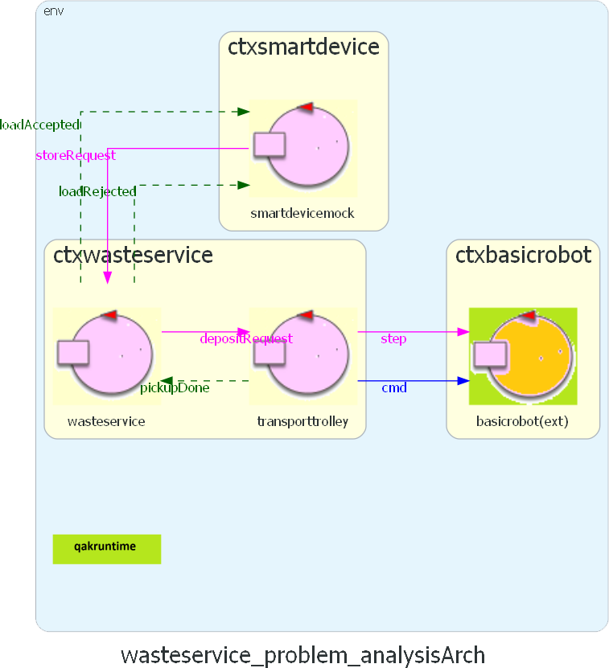
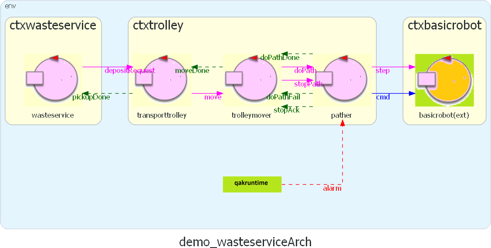

Introduction
SCRUM goal
In the Sprint1 we aim to analyze the problems linked to the modeling of the core service and, ultimately, create a functioning prototype.Core Service

The core service is identified by the following elements:
- Wasteservice
- Transport Trolley
- Waste Truck/Driver
Requirements
Problem analysis
Map and Trolley movement
The first problem we are going to tackle is how the transport trolley/DDR robot moves within the space of the service.The customer has given us an image of the layout but, for obvious reasons, the robot cannot understand them, so it has no idea where to go or what to look for. We can theorize some solutions to this problem:
Without Map Coordinates
This solution requires no planning, as it uses the specified layout given by the customer to move the trolley.
By abusing the fact that all points of interest are located on a wall adjacent to a corner, all the robot needs to do is move along the walls and find the target by colliding with it.
If, by chance, the trolley received a different command, it would just need to turn in the right direction/orientation and keep moving.
PROS - Easily scalable to all room sizes.
- No need for prior room mapping of coordinates.
CONS - The movement logic is strictly tied to the layout. Even the smallest change would require a lot of work, making this solution not flexible.
- Determining the complete logic is a complex problem.
With Map Coordinates
This solution uses pre-determined coordinates to move the trolley.
To use the coordinates, the room is divided into squares with dimensions based on RD using a mapper.
Then, each point of interest (HOME, INDOOR, PLASTICBOX, GLASSBOX) is assigned to some of the coordinates.
 The customer provides 3 useful tools:
The customer provides 3 useful tools:
- unibo.mapperQak22: Creates a map of the room in the form of a string by moving the robot around and saving movement and collision data.
- unibo.planner22: Finds a path for the robot by using target coordinates.
- unibo.pathexecutor: Moves the robot along a certain pre-determined path.
PROS - Easily scalable to all room layouts.
- Easy to implement, as the customer provides a lot of useful software.
CONS - Mapping the room and assigning coordinates takes time.
- The room's dimensions might not be multiples of RD, so additional movements may be required to reach all points of interest.
In the first place, it's necessary to further introduce the tools provided by the customer that will be used to solve the problem:
Assigning points of interest to coordinates on the map
After generating the map, we have to assign all points of interest (HOME, INDOOR, PLASTIC BOX, GLASS BOX) to the coordinates.Considering the image provided by the customer, we can see that HOME is a space on the floor; however, the other points are mapped on the walls.
How can we decide when the trolley is interacting with these points ?
We have decided that if the robot enters the spaces adjacent to the walls and faces towards those walls, then it is able to interact with them.
As an example, let's take a map generated by mapperQak22 using the virtual robot environment:
|r, 1, 1, 1, 1, 1, 1,
|1, 0, 0, 0, 0, 0, 1,
|1, 0, 0, 0, 0, 0, 1,
|1, 0, 0, 0, 0, 0, 1,
|1, 1, 1, 1, 1, 1, 1,
r is the robot in its HOME position. For now, these are the sizes and general positions of all points of interest based on the general coordinates of a map:
| Name | Size | Position |
|---|---|---|
|
||
|
||
 |
|
|
|
WARNING: these definitions are based on a rough image and could be subject to change.
Moreover, this information could be hardcoded in the system, however we thought it would be better to create a configuration file in case these definitions have to be change (we have also considered the option to generate the file as part of the mapping process).
The following is an example of that configuration file created for the initial map in the virtual robot environment:
{
"positions": {
"home" : [
[0, 0]
],
"indoor": [
[0, 4], [1, 4], [2, 4]
],
"glassbox": [
[4, 0], [5, 0], [6, 0]
],
"plasticbox": [
[6, 2], [6, 3], [6, 4]
]
}
}
wasteservice
- When do we notify the driver of a successfull pickup action ?
- Who notifies the driver of a successfull pickup action ?
- When can we update the amount of material inside the containers ?
Driver interaction timing
In the previous Sprint we modeled the interaction so that loadAccepted and loadRejected both arrive immidiately to the driver after the storeRequest. However, with this solution it is impossible to know when the trolley picks-up the load without adding another message.
However, with this solution it is impossible to know when the trolley picks-up the load without adding another message.So, for the sake of efficiency, we can delay the loadAccepted reply to when the trolley does the pickup action.
As a consequence of this decision, the entity who will notify the driver of a successfull pick-up action is wasteservice.
This can be easily achieved by changing the notifyDeposit dispatch (defined in Sprint0) into a Request so that its Reply can be sent to the wasteservice once the trolley picks-up the load.
Request depositRequest : depositRequest(MATERIAL, QUANTITY)
Reply pickupDone : pickupDone(RESULT)
Container status update
The next issue to discuss is choosing the appropriate moment to update the status of the containers in the system.The amount of material stored in each container is managed and monitored by the wasteservice actor, who has to make sure that the current weight doesn't exceed MAXPB and MAXGB.
The first and most obvious answer is to update the weight after the trolley has completed the deposit action.
However, there is a major flaw with this solution: the transit of the trolley and the deposit of the load both take time, in the meanwhile another storeRequest can be requested and we don't know if we can accept it.
As a solution, instead of using the amount of material inside the containers, to check the storage feasibility we can consider the current load inside the system instead.
wastetruck
Customer's software
mapperQak22
Once the robot has explored the whole room, mapperQak22 stops sending commands and saves the resulting map in two files with different types:
- ().txt which is useful to show the map layout.
- ().bin will be used later by the planner.
As of now, this seems to be a good way to map the service area.
planner22
The methods provided are summarized in the following interface:

- initAI: initialize a breadth-first algorithm used to plan the best path.
- loadRoomMap: loads the binary map file, assuming the robot position in [0,0].
- showMap: shows a visual array representation of the current state of the map.
- setGoal: sets the goal position in coordinates.
- doPlan: uses the AI to plan the best path from the current position to the goal.
- startTimer: starts a timer.
- getDuration: returns the time passed from the last start of the timer.
pathexecutor
Currently this string is hard-coded, we intend to use the planner to get this string and send it to this actor. We will later define this methods.
Current system architecture

Complete QAK Model Wasteservice
Transporttrolley QAK
Wasteservice QAK
We have prepared the following tests for this particular model:
Transporttrolley QAK
Wasteservice QAK
Test Plans
- TestWasteservice.kt: it checks the functioning of the storeRequest and the following replies.
- TestTransporttrolley.kt: it checks the correct execution of the transporttrolley's basic behavior.
Project
Map and Trolley movement: resulting model
The following section describes the model created following the problem analysis for the movement of the robot inside the room of the system.It uses the coordinate strategy and all previously mentioned tools provided by the customer (some of them have been modified and will be discussed shortly).
As for the previous models, it was created using the QAK modeling language and its code can be found here: demo.qak 
Transporttrolley
transporttrolley - We started with the transporttrolley project due to the fact that is (in our opinion) the largest, most complex and sensible to change part of the architecture.
In view of our previous choice to use coordinates, we needed to use something to move the robot accordingly. So, after using the mapper to obtain and set the coordinates of our points of interest, we implemented our transporttrolley actor as simple and placeholder as possible.
His previous behavior (seen in the problem analysis) didn't correspond to its intended one, as it was done only for testing purposes. He does now manage the whole routine (HOME -> INDOOR -> BOX -> HOME) to properly handle the deposit requests he recieves, even when consecutive. He does so by making requests to our new trolleymover actor by only specifying the location to reach, unencumbered by the modality.
- We started with the transporttrolley project due to the fact that is (in our opinion) the largest, most complex and sensible to change part of the architecture.
trolleymover - Trolleymover handles this path in the following sequence:
-
- Gets the nearest coordinate of the target location thanks to our utils method getClosestCoordinate.
- Uses the planner to calculate the path to the coordinate.
- Relays the path string to the pather and, if needed, in this state can handle a "path switch" (later discussed).
- Trolleymover handles this path in the following sequence:
pather - Our version of the actor pathexecutor (called pather) has two main new features:
-
- Continuously updates the status of the virtual map, based on the robot's current position and the next move to execute.
- It now can easily react to the previously mentioned "path switch".
- Our version of the actor pathexecutor (called pather) has two main new features:
Path Switching
During the development of this model, we encountered the issue of stopping the robot during the ongoing path.This can happen when the trolley is moving towards HOME, as part of its normal routine, and a new deposit needs to be handled.
So the robot should stop moving and calculate a new path from the current position towards INDOOR.
As a sub-part of this problem we encountered the issue of constantly knowing the current position of the robot.
Thankfully, the planner provides the method updateMap to keep track of the robot's position and rotation after each move.
Consequently we are able to use the planner itself to substitute the current path with a newly calculated one whenever it's required.
Our new models now include some new states to make this possible.
Wasteservice
Smartdevice
Other changes
The only changes were the addition of using our new class Coordinate and the method getActionsString, that takes a generated path (a list of moves) and converts it into a single string, as required by the pather.
[w,l,w,w,r,r,w,w] => "wlwwrrww"
Assigning coordinates during the mapping phase
Initially, the target location is in string format (HOME, INDOOR, ecc...), and it's necessary to convert that information into coordinates. To do this, we introduced two kotlin files:
SystemConfig.kt - This object contains the coordinate information for each location in the map, obtained by reading the json config file during the system's initialization.
[# (...) SystemConfig.setTheConfiguration("SystemConfiguration") planner.initAI() planner.loadRoomMap("mapRoomEmpty") #]- This object contains the coordinate information for each location in the map, obtained by reading the json config file during the system's initialization.
utils.kt - This object handles the coordinate information with these two methods:
- getMapCoord returns all coordinate positions of one location thanks to SystemConfig.
- getClosestCoordinate uses the current position of the robot and a location name to determine the single coordinate of that location that is closest to the robot.
- getLocationFromMaterialType returns the name of the target location given the material.
[# var coord: Coordinate = utils.getClosestCoordinate(planner.get_curCoord(), LOC) planner.setGoal(coord.x, coord.y) planner.doPlan() Actions = planner.getActionsString() (...) #]
- This object handles the coordinate information with these two methods:
smartDevice
We also have developed a simple GUI application in python to simulate the interaction between the wastetruck and the wasteservice.
 From the top menu it's possible to choose the different material options (currently only PLASTIC and GLASS) and to specify the weight
of the load. Pushing the button it sends a TCP request to the wasteservice end-point and the consequent reply can be seen on the textbox
as shown.
From the top menu it's possible to choose the different material options (currently only PLASTIC and GLASS) and to specify the weight
of the load. Pushing the button it sends a TCP request to the wasteservice end-point and the consequent reply can be seen on the textbox
as shown.
Test plans
- TestUtilityMethods.kt: it checks the validity of the utils.kt object by testing its methods.
- TestTrolleyMover.kt: it checks if the movements needed to accomplish the tasks are done correctly and tests an instance of interrupted movement due to a change of the target destination, that also must be handled in the correct order.
- TestTransporttrolley.kt: it checks if both single and consecutive requests are managed in the correct way by the transporttrolley using CoaP to keep track of it's movements.
- TestWasteservice.kt: it simply checks if the requests made to the wasteservice are accepted or denied accordingly to the state of the system.
Work plan
WhileSCRUM Goal:
- Add a
HALT functionality to the robot's behavior - Connect the raspberry to the system
- Implement the
sonar interaction - Implement the
led interaction
Next Sprint: Sprint 2
Task assignment
| Task | Description | Developers |
|---|---|---|
| Creating a mini-app that simulates the Truck Driver interaction with the wasteservice. | ||
| Creating test routines for the wasteservice actor, implementing CoaP communication as a monitoring tool | ||
| Creating test routines for the transporttrolley actor, implementing CoaP communication as a monitoring tool | ||
| Creating test routines for the trolleymover actor, implementing CoaP communication as a monitoring tool |